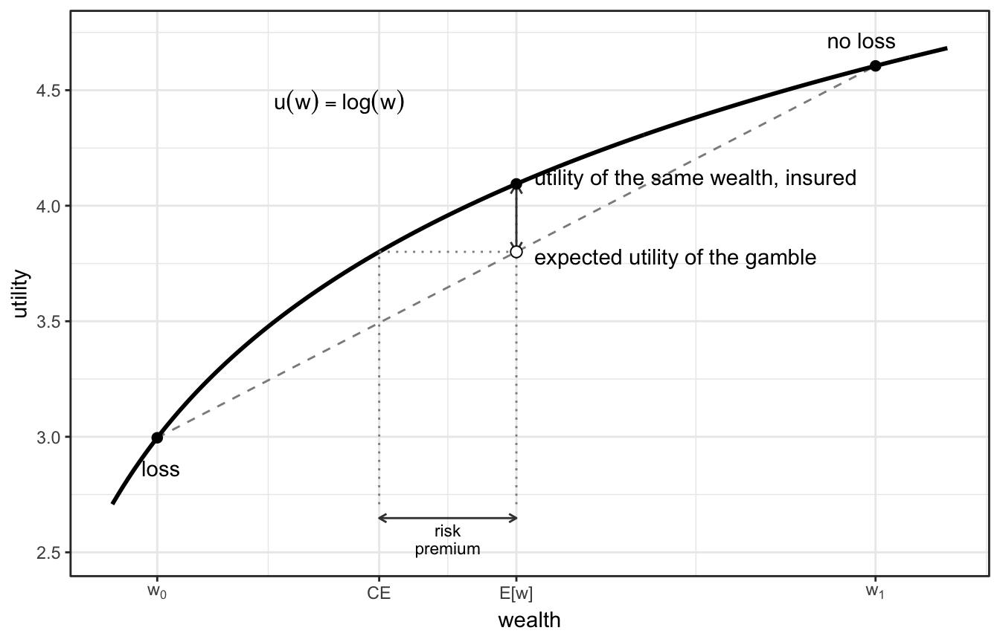

Show code
faces <- 1:6
(ev_die <- sum(faces * (1 / 6)))[1] 3.5Chapter 1 described a rational agent as one who forms degrees of belief from limited and noisy information and converts those beliefs into decisions. This chapter asks, how a person reasons well under uncertainty, what separates him from someone who reasons badly. The account is a qualitative version of the probability calculus derived in Chapter 5 and of the Bayesian updating made quantitative in Chapter 8; the only piece of arithmetic the chapter needs is the expected value, introduced later.
The words “right” and “wrong” carry quotation marks, because there is no single recipe that is uniquely correct, and several of the reasoning errors catalogued at the end of the chapter are not errors in every setting: a fast, frugal rule of thumb that misleads in a probability puzzle can serve well in the circumstances it was acquired for. The chapter therefore begins with a description of good reasoning, treated as a target to aim at, and only then turns to the systematic ways ordinary reasoning departs from it.
Between 2011 and 2015 the United States intelligence community sponsored a series of forecasting tournaments designed to find out which methods produce accurate probability estimates of geopolitical events.1 Five university-based research groups competed to recruit volunteer forecasters, elicit their predictions, and aggregate them.2 Forecasters were given questions with a clear resolution and a deadline — whether a particular leader would still hold office by a given date, whether a border clash would exceed a casualty threshold — and were asked not for a yes or no but for a probability. As each question resolved, the forecast was scored.
The scoring rule was the Brier score: the squared difference between the probability a forecaster assigned and the outcome, coded as 1 if the event happened and 0 if it did not, averaged over many questions.3 A lower score is better and zero is perfect. Scoring this way rewards two distinct virtues at once. A forecaster should be calibrated — of all the events to which she assigns a probability of 70%, about 70% should occur — and she should have resolution, meaning she assigns different probabilities to events that do and do not happen rather than hedging near 50% for everything. A forecaster who answers “50%” to every question can be perfectly calibrated over a balanced set of questions and still be useless, because she has no resolution.
The project that won, the Good Judgment Project, identified a small group of consistently accurate forecasters — the top 2% of the first year — and grouped them into elite teams.4 These “superforecasters” went on defying the expected regression towards the mean, holding their accuracy across hundreds of questions and a wide range of topics over the following years.5 What set them apart was not principally raw intelligence or subject-matter expertise. The investigators attributed their performance to four reinforcing factors — cognitive abilities and styles, task-specific skills, motivation and commitment, and the enriched environment of a forecasting team — and concluded that superforecasters are partly discovered and partly trained.6
For the purposes of this chapter the relevant factor is the reasoning style, because it can be described and learned.7 A superforecaster treats a belief as a hypothesis to be tested against evidence rather than a position to be defended. She thinks in degrees, using the whole range from 0 to 100% and revising in fine gradations, instead of collapsing a question to will or won’t. She begins from how often events of this kind occur in general before weighing the particulars of the case. She updates often and by small amounts as information arrives. And she actively seeks out views that differ from her own and combines them, a habit Tetlock calls taking the “dragonfly eye” — assembling many partial perspectives into one composite picture.8 The contrast is with the way most people forecast: committing early to a single narrative, anchoring on a first impression, and then either ignoring later information or swinging hard with each dramatic headline.
How large the trainable component is remains contested. A reanalysis of the tournament data, modelling each forecaster’s latent ability with an item-response framework and controlling for extraneous differences between forecasters, found that the measured effects of teaming and training shrank substantially and in places reversed, and that it is difficult to isolate which latent traits underlie superforecaster performance.9 The portrait above should therefore be read as a description of a reasoning style that is associated with accuracy and can be practised, not as a settled causal account of what makes a superforecaster.
The reasoning style is worth dwelling on because, stripped of the geopolitics, it is Bayesian inference carried out without any of the formulae. Each habit corresponds to one ingredient of the probability calculus that Chapters 5 and 8 set out formally.
Bayes’ theorem, derived in Chapter 8, combines a prior belief with the evidence in the data to give an updated belief. The superforecaster’s habits are the same operation done by hand. Four components do the work.
Background knowledge is the prior. Before examining the specifics of a case, a good forecaster asks how often things of this type turn out one way or the other — the base rate in a suitable reference class. To estimate whether a particular newly founded company will survive five years, she starts from the survival rate of comparable companies and adjusts from there; this is what Tetlock terms the “outside view”, taken before the “inside view” of the individual case.10 The base rate is the informal counterpart of the prior probability of Chapter 8. It is not a bias to be purged but information to be used, and the main way it goes wrong is the choice of reference class: too narrow a class, or one chosen to flatter a favoured conclusion, corrupts the starting point. Chapter 8 returns to this as the base-rate point, with the arithmetic supplied.
Evidence has a weight, and the weight is comparative. A new piece of information should move belief in proportion to how much more expected it is if one hypothesis is true than if its rival is true. Information that is equally probable either way carries no weight, however vivid or surprising it seems on its own. The superforecaster asks of each datum not “does this fit my view?” but “how much more likely is this observation if my view is right than if it is wrong?”. This is the qualitative form of the likelihood ratio; its logarithm is the weight of evidence, made precise in Chapter 8, where it has the convenient property of being additive, so that independent pieces of evidence can be summed. The practical consequence, developed there, is that evidence is never weighed against a hypothesis in isolation but always relative to a named alternative.
Belief shifts a little at a time. Good forecasters revise frequently and in small increments as evidence accumulates, rather than holding a fixed opinion until one event overturns it. Two opposite failures are common. One is under-reaction: anchoring on an initial estimate and treating subsequent data as mere confirmation, so that belief barely moves when it should. The other is over-reaction: lurching to each new report as though the earlier evidence counted for nothing. The Bayesian ideal between them is a sequence of many small, evidence-proportioned updates. This is exactly what Chapter 8’s iterative updating looks like when performed informally: yesterday’s posterior becomes today’s prior, each new observation enters through its likelihood, and there is no minimum amount of data below which an update is forbidden.
Calibration and extremising. Calibration, defined above, is the discipline of making stated probabilities match observed frequencies, and it is improved by the simple practice of recording forecasts and scoring them against outcomes — without a record there is no way to learn that one’s “90% sure” is right only 60% of the time. Extremising is a less obvious idea that emerged from the tournaments. When many forecasts that are individually well calibrated and based on partly independent information are averaged, the average is systematically under-confident, and pushing it away from 50%, towards 0 or 100%, improves accuracy.11 The reason is that each forecaster has seen only part of the relevant evidence; pooling their views justifies more confidence than any one of them is entitled to alone. The superforecaster’s dragonfly eye exploits the same effect inside a single head, and the tournament’s aggregation algorithms exploited it across forecasters. The caveat matters: extremising helps only when the forecasts are individually calibrated and draw on diverse, weakly correlated information. Applied to forecasts that share a common bias or merely echo one another, it makes the error worse.
These four habits — start from base rates, weigh evidence by its diagnosticity, update in small steps, and keep stated probabilities calibrated while aggregating diverse views — are the qualitative skeleton of Bayesian inference. The chapters in Part II put numbers on the bones: Chapter 5 derives the rules these habits obey, and Chapter 8 turns the weight of evidence and the prior into a calculation. The remainder of the present chapter stays with the informal picture, first to show how probabilities feed into decisions, and then to catalogue the characteristic ways in which untrained reasoning violates each of the four habits in turn.
The four habits describe a competence, and a natural hypothesis is that this competence is intelligence under another name. The individual-differences research of Keith Stanovich, Richard West, and Maggie Toplak indicates otherwise. Their Comprehensive Assessment of Rational Thinking (CART) is a test of rational thinking built on the model of an IQ test — its score is, informally, a rationality quotient — and its subtests measure the components of this chapter directly: probabilistic and statistical reasoning, resistance to framing and anchoring, use of base rates, calibration of knowledge against confidence, and the rejection of contaminated beliefs such as superstitious and conspiratorial thinking.12
Two findings define the relation to intelligence. First, the correlation is positive but far from complete, so a person’s rationality cannot be read from an IQ score. Across seven studies, several of the classic biases catalogued later in this chapter — the conjunction fallacy, framing effects, anchoring, base-rate neglect — were essentially uncorrelated with cognitive ability, while others (belief bias, denominator neglect) showed the expected correlation; on the authors’ account, intelligence helps when the task itself signals that an intuitive response needs overriding, and fails to help when noticing the need for override is the difficult part.13 Second, intelligence does not protect against the bias blind spot, the tendency to judge oneself less biased than others: in two studies the blind spot was, if anything, slightly larger at higher cognitive ability.14 Stanovich’s term for the resulting pattern — intelligent people reasoning and deciding irrationally — is dysrationalia.
High scorers are distinguished from low scorers by two classes of trait beyond intelligence. The first is a set of thinking dispositions: the reflective habit of checking an intuitive answer before accepting it, measured by the Cognitive Reflection Test, which predicts performance on heuristics-and-biases tasks over and above cognitive ability;15 actively open-minded thinking — the willingness to give evidence against a held belief its full weight and to revise the belief when the evidence warrants it; the enjoyment of effortful thought (“need for cognition”); and low endorsement of superstitious beliefs.16 These are dispositions of thought, not personality traits in the psychometric sense: their correlation with the Big Five trait of openness to experience is only moderate, and the Big Five themselves predict rational-thinking performance weakly. A related disposition, studied outside the CART programme, is intellectual humility — the recognition that one’s own beliefs may be wrong. People high in it hold their beliefs with less certainty, respond more to the strength of an argument than to its agreement with their position, and do not count a changed mind against the person who changed it.17 Its absence appears as overclaiming: self-perceived expertise predicts claiming knowledge of concepts in one’s own field that do not exist, independently of actual knowledge, and the effect persists when participants are warned that some concepts are fictitious — indicating miscalibrated self-knowledge rather than the defence of a reputation.18 The evidence linking intellectual humility to performance on heuristics-and-biases tasks is thinner than for the CART dispositions and rests on self-report measures. The second class of trait is mindware: the learned rules — the probability calculus among them — that the dispositions put to work. Intelligence supplies the computational capacity to override an intuitive answer; the dispositions determine whether the override is attempted; the mindware determines whether a correct answer is available to replace it. Dispositions and mindware are both more trainable than intelligence, which is the psychological ground for treating the four habits of this section, like the superforecaster’s style, as learnable.
Chapter 1 placed every empirical question on a continuum of uncertainty. At one end lie games of chance, where a simple model gives the long-run frequency of each outcome and the probabilities are known about as well as anything can be. At the other end lies radical uncertainty, where there is too little information even to list the possibilities, let alone weigh them. Most scientific questions, and almost all clinical ones, fall between the ends.
Wherever a question falls, a probability attached to an event is the risk of that event: a number between 0 and 1 measuring how much to expect it. In epidemiology risk has this precise meaning — the probability that a defined event, such as a diagnosis or a death, occurs in a defined group over a defined period. The number may come from a chance model near the games-of-chance end, or from a calibrated judgement near the other end, as the superforecaster’s does; in a decision it plays the same role either way. What makes a judged probability usable is the calibration of whoever states it, discussed above: a risk is only as trustworthy as the track record of the person who assigned it.
Two ways of stating the same risk can leave very different impressions. The absolute risk is the probability itself — say, that 5 women in 1,000 die of a disease over ten years. The relative risk is the ratio of two absolute risks — say, that a treatment lowers that figure from 5 to 4 in 1,000. The one effect can be reported as “a 20% reduction in deaths” (relative) or as “one fewer death per 1,000 women” (absolute); the two descriptions are arithmetically identical but psychologically far apart. Reporting only the relative figure, which drops the baseline it is a fraction of, is a standard way of making a small effect look large, and surveys find that patients, journalists, and physicians alike are frequently misled by it.19
A related ambiguity affects probabilities attached to a single event. “A 30% chance of rain tomorrow” does not say 30% of what; stating the risk as a frequency — on 30% of days like tomorrow, it rains — names the reference class and is understood more reliably. The same preference for frequencies over bare probabilities returns in the breast-cancer-screening example later in the chapter, where it separates a transparent presentation of the numbers from an opaque one.
These ways of expressing a risk are, for now, only descriptions. Their formal causal counterparts — the risk difference, the risk ratio, and the odds ratio, treated as estimands of a causal effect — are the subject of Chapter 10. Here the point is narrower: a probability is a risk, the same risk can be dressed in clothes that flatter or diminish it, and a careful reasoner reads through the presentation to the absolute numbers underneath.
The distinction is concrete in road safety. A meta-analysis of 60 studies found that the relationship between blood alcohol concentration (BAC) and crash risk is approximately exponential: at BAC around 0.05 g/dL the relative risk of crash involvement is approximately 1.5–2.5 compared with a sober driver; at BAC ≥ 0.08 g/dL a prospective responsibility study found an odds ratio of 6.0 (95% CI 3.9–9.8) for being at fault in a crash.2021 The effect is stronger for fatal than for non-fatal outcomes and, in Nordic and Baltic countries, is larger than the international average — probably because the baseline prevalence of impaired driving is lower there, so impaired drivers stand out against a more uniformly sober driving population. Consider a driver at BAC roughly 0.03–0.07 g/dL: above the Estonian legal limit of 0.02 g/dL but below the level most drivers associate with obvious impairment, and in the range where the relative risk is approximately 2. In an Estonian or Nordic driving environment a sober driver on a 10-km trip faces an absolute probability of any recorded crash of roughly 1–2 in 50,000; doubling this yields 2–4 in 50,000.22 The increment is small enough that nearly all such trips end without incident, which is consistent with the reported experience of most occasional drunk drivers and does not represent a reasoning error on their part: given the absolute numbers, the per-trip risk is genuinely low.
The error is in the inference from individual experience to the population. Approximately 2% of Estonian drivers report occasionally driving while inebriated.23 At a modest ten trips per year each, that is roughly 160,000 such trips annually. At an excess absolute crash risk of 1–2 per 50,000 — the increment corresponding to a relative risk of 2 — the expected number of attributable crashes from this group alone is in the range of 3–6 per year. Drivers at higher BAC levels, and those who drive while impaired more frequently or at night (when crash rates are elevated regardless of alcohol), contribute a larger share; the total alcohol-attributable fraction of serious crashes in Baltic and Nordic countries is typically estimated in the range of 15–25%.24 The relative risk was 2; the total burden is large not because any individual trip is particularly dangerous, but because a small absolute risk, multiplied by many exposures across a large population, produces a substantial expected count of events. A risk assessment conducted only at the individual level, using the relative risk alone, misses this. The formal causal question — what fraction of crashes are attributable to alcohol, after adjustment for characteristics of drivers who choose to drink and drive — is the subject of Chapter 10.
These averages conceal a wide spread across drivers, which sharpens both the individual and the population points. Before any alcohol, the baseline risk of a fatal crash per distance driven varies several-fold with age and sex: in US data a man aged 16–19 is involved in about 3.7 times as many fatal crashes per mile as the average driver (some 9 against 2.5 per 100 million miles), the rate falls to a minimum in middle age, and it rises again in the oldest drivers, among whom increased fragility — dying in a crash a younger person would survive — contributes alongside any rise in crash frequency.25 The alcohol multiplier is not constant across these groups either. For the more severe outcome of a fatal single-vehicle crash, the relative risk just above the common 0.08 g/dL limit, measured against a sober driver of the same age and sex, has been put at about 11 for drivers aged 35 and over but around 50 for men aged 16–20, with each further 0.02 g/dL roughly doubling it.26 Baseline and multiplier vary in the same direction and so compound: the same drink adds far more absolute risk for a young man — a high baseline scaled by a steep multiplier — than for an older driver, though the two cannot simply be multiplied here, as they are measured on different crash outcomes. “The risk of drink-driving” therefore has no single value; it depends on who is driving, the same dependence on the reference class that governs the choice of a prior. A relative risk quoted for the average driver understates the absolute hazard for the group that supplies most of it and overstates it for the safest.
The gap between relative and absolute risk is partly a problem of framing: the same number reads differently depending on how it is presented. Two communication strategies have accumulated evidence in their favour.27
Natural frequencies. Replace “a 0.5% annual risk” with “5 people out of every 1,000 each year”. The denominator is made explicit and the quantity becomes countable. The same device transforms opaque conditional probabilities into transparent two-by-two tables in Chapter 8.
The betting scale. If the probability of an event is \(P = 1/N\), then a fair bet has you stake 1 EUR and collect \(N\) EUR if the event occurs; paying less than \(N\) EUR means accepting an unfair bet against yourself. The amount \(N\) is a direct, intuitive scale for rarity: the rarer the event, the more you should demand before agreeing to bet your 1 EUR on it. As a calibration, consider US road traffic: in 2010 roughly 32,000 people died in traffic crashes among a population of 300 million, giving a per-person annual probability of approximately 1 in 10,000 — so you should collect around 10,000 EUR on a 1 EUR bet to call it fair. The table below places that figure on a wider scale of mortality risks.
| Collect (EUR) for a 1 EUR bet | Event |
|---|---|
| 50,000,000 | You die on your next flight to Paris |
| 1,000,000 | You die in an accident on any given weekday |
| 100,000 | You die during a given day of recreational activity |
| 10,000 | You die in a road traffic crash within the next year |
| 5,000 | A cocaine user dies within the next year |
| 1,000 | A 48-year-old American man dies within the next year; a patient dies of influenza |
| 500 | A person diagnosed with measles dies (UK, 1940s) |
| 200 | A UK infant dies within the first year of life; a 63-year-old man dies within the next year |
| 100 | A 68-year-old man dies within the next year |
| 75 | Calling from Everest base camp, you bet you will die on the summit attempt; a 72-year-old man dies within the next year |
| 50 | A heroin user dies within the next year |
| 25 | Calling from the summit, you bet on the descent; an 86-year-old man dies within the next year |
The two representations are complementary. Natural frequencies work well when comparing a risk against a reference group; the betting scale works well when the question is whether an individual risk is worth acting on. Both make it harder to mistake a relative figure for an absolute one.
The absolute-versus-relative distinction is for binary events. When the outcome is continuous — a cognitive-test score, a biomarker, a blood-pressure reading — an effect is a difference in means, often reported in standardised form as Cohen’s d: the difference in means between the treated and control groups divided by the pooled standard deviation of the outcome. A standardised difference is difficult to interpret directly; whether \(d = 0.2\) is worth acting on is not something the number announces on its face.
One re-expression restores an intuitive scale. The probability of superiority is the probability that a person drawn at random from the treated group has a higher score than a person drawn at random from the control group. If treatment changed nothing the two draws would be interchangeable and the probability would be \(0.5\); the further it rises above \(0.5\), the more the two score distributions have separated. It is a probability — a risk, in the sense of this section — attached to one concrete comparison, which is why it is easier to hold in mind than a standardised mean.28
Under a normal model with equal variances the two are linked by a fixed function, \(A = \Phi(d/\sqrt{2})\), where \(\Phi\) is the standard normal distribution function. The probability rises slowly with the standardised effect:
| Standardised difference \(d\) | Probability of superiority \(A\) |
|---|---|
| 0.1 | 0.53 |
| 0.2 (conventionally “small”) | 0.56 |
| 0.5 (conventionally “medium”) | 0.64 |
| 0.8 (conventionally “large”) | 0.71 |
| 1.0 | 0.76 |
| 2.0 | 0.92 |
The lesson matches the one for absolute and relative risk. An effect that sounds substantial on the standardised scale corresponds to a probability only modestly above one-half: a “medium” effect of \(d = 0.5\) means that, of two people picked at random, the treated one scores higher about 64% of the time — a coin weighted only slightly in the treatment’s favour. Read the other way, a headline such as “a 54% chance that a treated person scores higher than an untreated one” describes a standardised difference of about \(d = 0.14\), roughly a seventh of a standard deviation and small by any of the conventional labels. Stating an effect as the probability of a single comparison keeps its size in view where a standardised difference, or a bare relative change, can obscure it.
A chance experiment invites two different questions, and it is worth keeping them apart before combining them. The first is how likely a particular outcome is — its probability, \(\Pr(X)\), a number between 0 and 1. The second is what happens on average to some quantity that takes a different value on each outcome — its expected value, \(E(X)\). A single die shows the difference. The probability of rolling a six is \(\Pr(\text{six}) = 1/6\), a statement about one designated outcome; the expected value of the number of pips is the probability-weighted average of all six faces, which works out to 3.5. Probability singles out an event and measures its chance; expectation takes a number attached to every outcome and averages it.
The two are relatives, not rivals. An expected value is assembled out of probabilities — each value the quantity can take, multiplied by the probability of taking it — so \(E(X)\) cannot be formed without the \(\Pr\)’s. The converse holds too: a probability is itself an expected value. If \(X\) scores 1 when an event happens and 0 when it does not, then \(E(X) = \Pr(\text{event})\), so probability is the special case of expectation in which the only values are one and zero. The distinction is real, but it is a distinction within a single piece of arithmetic.
The order of this section — probability first, expected value second — reverses the order of discovery. The mathematical theory of chance is usually dated to a 1654 correspondence between Pascal and Fermat on how to divide the stakes of an interrupted game, and the first printed treatise, Christiaan Huygens’s De ratiociniis in ludo aleae (1657), was built not on probability but on expectation: its primitive notion was the fair value of a player’s position in a game, from which Huygens derived that a player with \(p\) equally likely chances of winning \(a\) and \(q\) chances of winning \(b\) holds a position worth \((pa+qb)/(p+q)\). He counted chances rather than assigning probabilities, and had no separate, defined quantity called probability; yet his formula is the modern expected value in disguise, because \(p/(p+q)\) and \(q/(p+q)\) are simply the probabilities of the two outcomes. Probability as a number in its own right was abstracted from this calculus only later, in Jacob Bernoulli’s Ars Conjectandi (1713), and the word was fixed in its modern sense by de Moivre and Montmort soon after. The arrangement now standard — probability as the primitive, and expectation as the sum (or, in general, the integral) of values weighted by it — was not settled until Kolmogorov’s axioms of 1933. The identity \(E(X) = \Pr(\text{event})\) for a 0/1 variable, which can look like a curiosity, is a trace of the older order in which the value of a chance, not its probability, was the thing first reasoned about.29
For a decision, the quantity that usually matters is the expected value, because a probability says how likely an outcome is but not how much it matters. Attach to each possible outcome a value — money, lives, years of health, or any quantity that measures what is at stake — and weigh each value by the probability of the outcome that carries it. The sum is the expected value of the prospect.
For a prospect with outcomes \(1, 2, \dots, n\) that occur with probabilities \(p_1, p_2, \dots, p_n\) (summing to 1) and carry values \(v_1, v_2, \dots, v_n\), the expected value \(E(X)\) — written \(\text{EV}\) for short — is
\[\text{EV} = p_1 v_1 + p_2 v_2 + \dots + p_n v_n = \sum_{i=1}^{n} p_i\, v_i.\]
This is the only formula the chapter requires. The fair die makes the mechanics explicit: each face \(1\) to \(6\) has probability \(1/6\), so the expected value of the number rolled is
faces <- 1:6
(ev_die <- sum(faces * (1 / 6)))[1] 3.5The result, 3.5, is a number that never comes up on any single roll. The expected value is a long-run average, not a prediction of the next trial: over many rolls the mean approaches 3.5, but on any one roll that figure is beside the point.
A monetary prospect makes the use in a decision plain. Suppose a game pays €10 if a fair coin lands heads twice in a row, and nothing otherwise.
outcomes <- c(10, 0) # euros won
probability <- c(0.25, 0.75) # two heads in a row: 0.5 * 0.5
(ev_game <- sum(outcomes * probability))[1] 2.5The expected value of playing is €2.50. If the game costs €2 to enter, the expected net gain is €0.50, and a player who met this game many times would come out ahead; if it costs €3, the expected net gain is −€0.50, and the same player would lose in the long run. The rule this suggests — among the options available, prefer the one with the highest expected value — is the core of decision theory, and Chapter 1 gave its general form as maximising expected utility.
The rule must be handled with care, because everything turns on what “value” means. When value is measured in money, expected value can give the wrong answer: people sensibly pay more than its expected value for insurance, and buy lottery tickets whose expected value is negative, because a euro is not worth the same at every level of wealth. The next two sections take up these decisions — the lottery ticket, and breast-cancer screening — and show where comparing expected values settles the matter and where it does not.
A lottery is the simplest test of the expected-value rule, because everything in it is denominated in money. Consider the EuroJackpot, played across much of Europe, Estonia included. A ticket costs €2, and the chance of winning the jackpot with one ticket is about 1 in 140 million — precisely 1 in 139,838,160.30 The jackpot starts at €10 million and is capped at €120 million. Take the most favourable case, a capped €120 million jackpot, and set aside the smaller prizes for a moment:
ticket <- 2
jackpot <- 120e6
odds <- 139838160
(ev_jackpot_only <- jackpot / odds)[1] 0.8581349The jackpot alone contributes about €0.86 to the expected value of the ticket, and that is the best case, at the maximum jackpot; at the €10 million minimum it contributes about €0.07. For the jackpot to repay the €2 price on its own it would have to exceed €280 million, more than twice the cap. The smaller prize tiers add something, but not enough to close the gap: like every lottery, EuroJackpot is arranged to pay out less in prizes than it collects in stakes, the difference funding the operator, the state, and designated good causes. The expected value of a ticket is therefore negative by design, and by the rule of the previous section no one should ever buy one.
Yet sensible people buy them, and they are not obviously irrational. The resolution is that money is not value. A euro added to a fortune is worth less to its owner than a euro added to nothing — the diminishing marginal utility of wealth — and once value is measured in utility rather than in euros, the calculation changes. Daniel Bernoulli made this argument in 1738 to resolve a puzzle, the St. Petersburg paradox (box), proposing that people maximise expected utility, where utility rises with wealth but ever more slowly.31 Chapter 1 gave this as the general form of the decision rule.
A casino offers this game. A fair coin is tossed until it first lands heads. The prize is €2 if heads appears on the first toss, €4 if it first appears on the second, €8 on the third, and so on, doubling for every extra toss the game survives. What is a fair price to play once?
Apply the expected-value rule. The first heads falls on toss \(n\) with probability \((1/2)^n\), and the prize is then \(2^n\) euros, so each toss contributes \((1/2)^n \times 2^n = 1\) euro to the expected value — and the number of tosses is unbounded:
\[\text{EV} = \tfrac{1}{2}(2) + \tfrac{1}{4}(4) + \tfrac{1}{8}(8) + \dots = 1 + 1 + 1 + \dots = \infty.\]
The expected prize is infinite, so the rule says you should be willing to pay any finite price — your whole fortune — to enter. Almost no one would pay more than a few euros. The reason is that the large prizes driving the sum upward are very unlikely: the game ends on the first toss half the time and pays €2, it pays €4 or less three-quarters of the time, and a prize above €1,000 requires nine tails in a row before the first heads, a chance of about 1 in 500.
Bernoulli’s resolution was that a player values not the euros themselves but the utility they bring, and that utility rises ever more slowly as wealth grows. If utility is the logarithm of wealth, for example, the doubling prizes are offset by shrinking increments of utility; the sum then converges and the game is worth only a small, finite amount — close to what people will actually pay. The paradox dissolves once value is measured in utility rather than in money, the same correction that explains the lottery ticket.
Diminishing marginal utility usually makes people risk-averse, and it is why paying more than its expected value for insurance can be rational: the large loss insured against falls on the steep part of the utility curve. The figure below sets this out for a concave utility curve.
u <- function(w) log(w) # diminishing marginal utility of wealth
w0 <- 20 # wealth if the insured loss occurs
w1 <- 100 # wealth if it does not
p <- 0.5 # probability of the loss (exaggerated for clarity)
Ew <- (1 - p) * w1 + p * w0 # expected wealth
Eu <- (1 - p) * u(w1) + p * u(w0) # expected utility of the uninsured gamble
CE <- exp(Eu) # certainty equivalent: u(CE) = Eu
curve_df <- data.frame(w = seq(15, 108, length.out = 400))
curve_df$u <- u(curve_df$w)
yb <- u(15) # baseline for the dotted guide lines
pts <- data.frame(
w = c(w0, w1, Ew, Ew),
u = c(u(w0), u(w1), u(Ew), Eu),
shape = c(16, 16, 16, 21) # filled = on the curve; hollow = on the chord
)
ggplot(curve_df, aes(w, u)) +
annotate("segment", x = w0, y = u(w0), xend = w1, yend = u(w1),
linetype = "dashed", colour = "grey55") + # chord = averaging the outcomes
geom_line(linewidth = 1) + # the utility curve
annotate("segment", x = CE, y = yb, xend = CE, yend = Eu,
linetype = "dotted", colour = "grey55") +
annotate("segment", x = Ew, y = yb, xend = Ew, yend = u(Ew),
linetype = "dotted", colour = "grey55") +
annotate("segment", x = CE, y = Eu, xend = Ew, yend = Eu,
linetype = "dotted", colour = "grey55") +
annotate("segment", x = Ew, y = Eu, xend = Ew, yend = u(Ew),
arrow = arrow(ends = "both", length = unit(2, "mm")), colour = "grey25") +
annotate("segment", x = CE, xend = Ew, y = yb - 0.06, yend = yb - 0.06,
arrow = arrow(ends = "both", length = unit(1.5, "mm")), colour = "grey25") +
geom_point(data = pts, aes(w, u), shape = pts$shape, fill = "white", size = 2.4) +
annotate("text", x = w0, y = u(w0) - 0.13, label = "loss", hjust = 0.4) +
annotate("text", x = w1, y = u(w1) + 0.11, label = "no loss", hjust = 0.7) +
annotate("text", x = Ew + 2, y = Eu - 0.02, label = "expected utility of the gamble", hjust = 0) +
annotate("text", x = Ew + 2, y = u(Ew) + 0.03, label = "utility of the same wealth, insured", hjust = 0) +
annotate("text", x = (CE + Ew) / 2, y = yb - 0.15, label = "risk\npremium", size = 3, lineheight = 0.9) +
annotate("text", x = 33, y = 4.45, label = "u(w) == log(w)", parse = TRUE, hjust = 0) +
scale_x_continuous(breaks = c(w0, CE, Ew, w1),
labels = c(expression(w[0]), "CE", expression(E*"["*w*"]"), expression(w[1]))) +
coord_cartesian(ylim = c(yb - 0.2, u(108) + 0.05), clip = "off") +
labs(x = "wealth", y = "utility") +
theme_bw()
A lottery runs the other way. The stake is trivial, so little utility is given up, while the prize is a discontinuous jump to a different kind of life, which may carry utility out of proportion to its monetary size; add the entertainment value of holding a ticket, and a negative-expected-value purchase can be a positive-expected-utility one. The expected-value rule has not failed — it has been applied to the wrong quantity. The general lesson is that a decision analysis is only as good as the values it places on the outcomes, and money is often a poor proxy for those values.
A woman in her fifties is invited to screen for breast cancer by mammography. Whether to accept is a decision under risk, but unlike the lottery it cannot be reduced to a single currency. The structure is the same — weigh the probability of each outcome by how much it matters — yet the outcomes are a death avoided, an unnecessary cancer diagnosis, and years of anxiety, which come with no common unit ready-made, as money was for the lottery.
Begin with the benefit, and with the distinction drawn in the section on probability as risk. Two large evidence reviews agree on the relative effect: pooling the randomised trials, both put the reduction in breast-cancer mortality among women invited to screening at about 20% (relative risk roughly 0.80). “A 20% reduction” is the figure that reaches posters and pamphlets, and it sounds decisive. Its absolute counterpart is less so. Expressed as a natural frequency, the Cochrane review estimates that for every 2,000 women invited to screening over ten years, one avoids dying of breast cancer;32 the UK independent panel, using different assumptions and a twenty-year horizon, estimates 43 fewer breast-cancer deaths per 10,000 women invited.33
The harms are in the same currency. Screening detects some cancers that would never have caused symptoms in a woman’s lifetime; these are overdiagnosed, and because they cannot be distinguished from dangerous cancers they are treated — by surgery, radiotherapy, sometimes chemotherapy — with no possibility of benefit. Screening also produces false alarms that resolve only after further tests.
# Two published natural-frequency summaries of inviting women to screening.
# Both express the same ~20% relative mortality reduction in absolute terms.
screening <- tibble::tibble(
source = c("Cochrane 2013", "UK Panel 2012"),
women_invited = c(2000, 10000),
years = c(10, 20),
deaths_prevented = c(1, 43),
overdiagnosed = c(10, 129)
)
screening# A tibble: 2 x 5
source women_invited years deaths_prevented overdiagnosed
<chr> <dbl> <dbl> <dbl> <dbl>
1 Cochrane 2013 2000 10 1 10
2 UK Panel 2012 10000 20 43 129The two reviews disagree on the balance. The Cochrane review pairs each breast-cancer death averted with about ten women overdiagnosed and treated unnecessarily, and with more than 200 of the 2,000 who suffer lasting distress from false-positive results; it also finds no detectable reduction in all-cause mortality, and notes that breast-cancer mortality is itself biased in screening’s favour by misclassified causes of death.34 The UK panel reaches a more favourable ratio — about one death prevented for every three overdiagnosed cases — while stressing that its estimates carry substantial uncertainty and should be read only as an approximate guide.35 A calibrated reader holds this as a range of defensible positions rather than a single number, which is what the present evidence supports.
Two conclusions follow. First, the decision has no single expected value that holds for everyone, but the reason is narrower than incommensurability. A woman with coherent preferences can place death, overdiagnosis, and anxiety on one personal scale of value — this is what expected-utility theory assumes, and what health economics makes operational in the quality-adjusted life year — and on that scale the expected-utility rule of the earlier sections applies as it always does. What the outcomes lack is an objective exchange rate: how many overdiagnoses, or how many months of anxiety, equal one death averted is not a fact about the world but a judgement, and it differs from woman to woman. (The construction does assume she will trade the outcomes off at some finite rate; a woman who holds death as beyond any such trade-off is following a different, lexical rule, and for her the expected-utility framework genuinely does not apply.) The probabilities structure the decision; they do not settle it, because the values that would settle it are personal. This is why screening is a matter for shared decision-making rather than a default: the analysis needs an input that only the woman can supply. Second, the presentation of the numbers largely determines whether a woman can apply her own values to them. The same evidence stated as “a 20% reduction in breast-cancer deaths” and as “one death prevented per 2,000 women screened for ten years, against ten overdiagnoses” invites opposite intuitions. Reporting the benefit in relative terms while leaving the harms absolute, or omitting them, inflates the apparent case for screening; presenting every figure as a natural frequency, in absolute terms and on a common base, is what allows an informed choice.36 The same natural-frequency device turns the opaque conditional probabilities of a diagnostic test into transparent counts in Chapter 8.
It seems impossible, and offensive, to put a price on a life: no sum compensates an identified death, and most people would not sell their life for money. But that is the wrong question. The decisions that force the issue — buy the safer car or not, build the roundabout or not, fund the drug or not — do not trade money for a known death. People and governments trade money for a change in the probability of death, spread over many people, and that question can be answered from how people actually behave.
Willingness to pay. Suppose a safety feature costs €500 and lowers your chance of dying in a crash over the life of the car by 1 in 10,000. Paying for it reveals that you value that risk reduction at least €500, which is the same as valuing a whole life at €500 × 10,000 = €5 million. The €5 million is not the worth of any person; it is the rate at which people trade money against small mortality risks, scaled up to one statistical life. Observe enough such choices — what people pay for airbags or smoke detectors, or the extra wages workers demand for dangerous jobs — and a figure emerges: market studies cluster between a few million and about ten million dollars per statistical life.37 This is the value of a statistical life (VSL).
The threshold, run backwards (the roundabout). A government with a fixed safety budget faces the inverse problem. A €3 million roundabout expected to prevent one road death per decade costs €3 million per statistical life saved; a €20 million scheme preventing the same single death costs far more. Whether either is worth building is settled by comparing its cost per life saved with a VSL benchmark — agencies such as the US Department of Transportation use a figure of about US$12 million.38 A scheme cheaper than the benchmark passes; one more expensive fails, because the same money would save more lives spent elsewhere. The VSL is the exchange rate between money and risk, read forwards to ask what one will pay and backwards to ask what a project must deliver.
Adding quality: the QALY. A death averted is not the only outcome that matters; medicine also alters how well, and how long, one lives. The quality-adjusted life year (QALY) weights each year of life by a quality factor running from 1 (full health) to 0 (death), with states judged worse than death scored below zero. Ten years lived at a quality of 0.7 are worth 7 QALYs, so a treatment that restores full health across those years gains 3. The weights are not invented but elicited from people, by methods such as the standard gamble (what risk of immediate death would you accept to be rid of the condition?) and the time trade-off (how many years in full health would you exchange for ten with the condition?).39 Health systems then rank interventions by cost per QALY gained against a threshold: the English body NICE has long used a band of roughly £20,000–£30,000 per QALY.40
These devices supply the common scale that the screening outcomes lacked: VSL converts risk into money, the QALY converts illness and death into a single health unit, and either makes an expected-value calculation possible across a population. They do not abolish the value judgement — they make it explicit, consistent between decisions, and open to scrutiny, which is at once their use and their controversy. And they work at the level of populations: the QALY weight a health system applies is an average, and need not match the weight a particular woman places on her own anxiety or overdiagnosis — which is why a programme can be cost-effective in aggregate and still not be the right choice for her.
These framing effects are not peculiar to medicine; the systematic patterns in human judgement that produce them are catalogued later in the chapter.
Everything so far has concerned a single mind: the superforecaster forming and revising her own probabilities, and the individual deciding whether to buy a ticket or accept an invitation to screen. A prediction market scales the same reasoning to many minds at once and reads the result off a price.
A prediction market trades contracts that pay a fixed sum — say €1 — if a specified event occurs and nothing if it does not. A contract on “candidate X wins the election” trading at €0.60 implies that the market values a euro paid only if X wins at 60 cents, which is to say it puts the probability of X winning at about 0.60. The price is a probability, and so, as the section on probability as risk noted, a risk — but one set by the trades of many people rather than asserted by one. A trader who judges the true probability higher than the price buys the contract in the expectation of profit; one who judges it lower sells; their trading pushes the price until it reflects the balance of the information the traders hold. Information scattered across many people, each holding a fragment, is aggregated into one continuously updated number. This is the wisdom of crowds — the observation that an aggregate of many independent judgements is often more accurate than any single judgement41 — with two additions: a price mechanism to combine the views, and money at stake to reward being right.
The money is what separates a market from a poll. A pundit pays no price for a confident forecast that proves wrong; a trader loses the stake, so posturing and wishful thinking are penalised and genuine information is rewarded. The market also performs the small-step updating described earlier, but collectively and in public: each trade is an incremental revision, and the price tracks events as they unfold. The forecasts are often accurate. The Iowa Electronic Markets, a small real-money market run for research since 1988, have predicted US presidential vote shares closer to the eventual result than the opinion polls a majority of the time, with their advantage greatest well before election day.42 In 2008 a group of prominent economists, several of them Nobel laureates, argued that markets aggregate dispersed information efficiently enough to deserve a wider role in business and government forecasting.43 A prediction market is, in this sense, institutionalised Bayesian aggregation: it turns many people’s background knowledge and evidence into a price that is a risk, with the profit motive standing in for the lone forecaster’s calibration.
Markets are not infallible, and their limits are instructive. The price equals the average probability only approximately: when traders are risk-averse and disagree, it is a wealth- and risk-weighted aggregate, and documented distortions such as the favourite–longshot bias — long shots over-priced, favourites under-priced — can skew it.44 A thin market, with few traders and little money, produces noisy prices that are easier to manipulate. And some markets should not exist at all: in 2003 the United States Defense Advanced Research Projects Agency proposed a Policy Analysis Market in contracts on political and military events in the Middle East, including acts of terrorism; once public, it was condemned in the Senate as a betting parlour on atrocities and cancelled within a day, and the official responsible resigned. The episode marks an ethical limit — some events should not be traded — alongside the legal and political obstacles such markets face more broadly.45 Used within those limits, a prediction market is among the most effective machines yet found for the aggregation that a superforecaster performs inside one well-trained head.
The price in a money market is a money-weighted probability, and the distortions just noted follow from that: when traders are risk-averse and unequally wealthy, the price aggregates their beliefs in proportion to the money they stake, not the information they hold. This is the same gap that ran through the expected-value sections — money is a workable but imperfect proxy for the thing actually wanted, there a value, here an accurate probability.
Some platforms therefore drop the money. Metaculus, a forecasting platform running since 2015, asks users for explicit probabilities rather than trades and combines them into a community forecast — a recency-weighted median, with versions that weight contributors by their past accuracy. There is no cash; forecasters are scored by a strictly proper rule, for which the best strategy is to report one’s true belief, and are ranked on a track record built over many resolved questions.46 Play-money markets such as Manifold keep the trading mechanism but settle in points rather than currency. Each replaces the financial incentive with a reputational one.
The notable finding is that dropping the money costs little accuracy — and, against intuition, does not clearly raise it. In a head-to-head over an American-football season a play-money market forecast about as well as a real-money one, and across other questions the two stayed close, with real money tending to hold a slight edge where the odds were not common knowledge; no study finds play money the more accurate.47 One might expect the wealth-weighting of a money market, where deeper pockets lead to louder voices, to handicap it, but the distortion is apparently offset by what the stakes also buy: a sharper incentive to do the costly work of finding information, and to trade against a mispriced contract. Take the money away and the distortion and the incentive go together. Where non-monetary aggregation has clearly outperformed, the edge has come from the aggregation method rather than the absence of cash: in the tournaments behind this chapter’s superforecasters, prediction polls combined with performance weighting and recalibration beat trading markets, though those same markets still beat a naive average of the polls.48
The Good Judgment Project, the chapter’s opening, was itself non-monetary, ranking forecasters by Brier score rather than profit. The lesson rhymes with the one from expected value: what a market needs is not money as such, but an incentive aligned with being right and a sound way to combine many views. Money supplies both at once; where it brings distortions, or where the question is one no one should — or legally could — bet on, accuracy-scored aggregation can stand in for it.
Markets and superforecasters alike are devices for overcoming the flaws in ordinary individual judgement. Those flaws are systematic, they are well documented, and they are the subject of the rest of the chapter.
The flaws are best seen against the standard set earlier — the habits of good reasoning in the chapter’s opening sections. Most people, most of the time, do not reason that way, and the departures are not random: they are systematic, shared across people, and predictable. The research programme that mapped them was begun by Amos Tversky and Daniel Kahneman in the 1970s, and it is convenient to set it against the two-system sketch Kahneman later drew.49 One mode of thought is fast, automatic, and effortless, and it answers a hard question by quietly substituting an easier one. Asked how probable is this? — a judgement that requires weighing the evidence against a base rate — it reaches instead for a question that can be settled without effort, such as how much does this resemble a typical case? or how readily does an example come to mind?, and reports the answer to that easy question as though it were the answer to the hard one. The swap goes unnoticed: the reasoner does not register that the question has changed. The three heuristics below are three versions of this same move. The other mode is slow, effortful, and deliberate, able to apply the rules of probability but lazy, and easily satisfied by the first answer the fast mode offers. The fast mode runs on heuristics — mental shortcuts that are economical and usually serviceable, but that produce characteristic errors. Tversky and Kahneman identified three.50
Representativeness judges how probable something is by how closely it resembles a stereotype, and in doing so discards information a calibrated reasoner would keep. Three of its errors recur in science.
The first is base-rate neglect, the discarding of the prior. In a much-used problem, a town’s taxis are 85% green and 15% blue; a witness who correctly identifies a cab’s colour 80% of the time reports that a cab in a night-time accident was blue. Combining the witness’s reliability with the base rate gives a probability of about 0.41 that the cab was blue; most people answer close to 0.80 — the witness’s reliability alone — neglecting the 15% base rate entirely. The failure is at the first of the four habits: the prior is thrown away.
The second is insensitivity to sample size, the neglect of how much small samples vary. A larger and a smaller hospital each record the proportion of male births every day; over a year, which more often records days on which more than 60% of births are boys? The smaller, because small samples fluctuate more widely around the true rate — yet most people judge the two equally likely. The error misreads the weight of a piece of evidence, treating a small and noisy sample as though it carried the information of a large one.
The third is the conjunction fallacy. Given a description of a woman built to fit the stereotype of a feminist, people judge “she is a bank teller and a feminist” more probable than “she is a bank teller” — though a conjunction can never be more probable than one of its parts.51 Representativeness here overrides a rule of probability so basic that stating it feels pedantic.
Availability judges the probability of an event by how easily examples come to mind. Vivid, recent, and emotionally charged events are recalled more readily and so are overweighted: people overestimate deaths from plane crashes and murders, which are reported and dramatic, and underestimate deaths from commoner but mundane causes such as falls. The error substitutes retrievability for diagnosticity — it lets the ease of recalling an example stand in for the weight of evidence the example carries.
Anchoring and adjustment lets an initial number, even a plainly irrelevant one, pull an estimate towards it, with the subsequent adjustment typically too small. People who watch a wheel of fortune stop on an arbitrary number, and are then asked to estimate an unrelated quantity, give answers biased towards that number. Anchoring corrupts the updating step: belief is dragged from an arbitrary starting point and moves too little to escape it.
A fourth pattern is not a heuristic but a consequence of how options are described. Framing effects arise when the same information, presented differently, reverses a choice.52 The case closest to this book is medical: when patients, students, and physicians chose between surgery and radiotherapy for lung cancer, surgery was far more attractive when its outcome was framed as “90% survive” than as “10% die”, though the two statements carry identical information.53 This is the same phenomenon as the relative-versus-absolute and survival-versus-mortality framings of the screening section, and it offends a principle from the section on probability as risk: a probability is the same probability however it is dressed.
Last, overconfidence: stated certainty routinely outruns accuracy. Asked for a range they are 90% sure contains some true value, people give ranges that contain it far less often than nine times in ten; asked how sure they are, they claim more than the record warrants.54 This is miscalibration, the opposite of the discipline that defines the superforecaster, and it is why calibration has to be learned and tracked rather than assumed.
These errors are usually presented, as they have been here, as a list of named biases. The next section asks whether a list is the right way to organise them.
The biases of the previous section are usually met as a list — in textbooks, in the online “bias” catalogues, and in §2.8 above. A list invites the reader to memorise names; it does not show how the errors are related, and relatedness is what a scientist needs, because one underlying failure can appear under several names. It is worth saying first why the catalogue matters at all. These errors are not the preserve of the innumerate: they persist among people who have mastered probability and statistics, who reproduce them whenever they reason quickly rather than deliberately. Rational thinking is a competence partly separate from intelligence (the rationality-quotient callout earlier in the chapter gives the evidence), which is why it must be taught and why expertise does not confer exemption.55
The biases named in this chapter, defined for reference. The list is alphabetical — a place to look a term up; the organisation that makes the terms useful is supplied by the section, not by the list.
The obvious step beyond a flat list is to group the biases by theme. One such grouping sorts them under three headings: belief-updating errors, the neglect of randomness, and the over-imposition of causal structure. It is the kind of scheme that suggests itself readily, and worth dissecting for that reason, because the organising principle of a catalogue determines what it can teach.
Part of the scheme is sound. Filing the updating errors as two opposed kinds — underweighting new data (clinging to a first impression) and overweighting it (lurching with each new datum) — correctly identifies them as the two directions of a single fault, the misjudged size of an update. The difficulty is with almost everything filed around that core.
The root trouble is that the headings name the surface appearance of an error rather than the mechanism that produced it. The chapter has, by this point, built the mechanism: a reasoner sets a prior, weighs evidence, updates, checks calibration, and — when the belief is turned into a choice — attaches values. A more useful catalogue sorts each documented failure by the stage that broke.
Cutting across all six is framing, or more generally the representation of the problem: the same facts described differently change the answer, so a framing effect can corrupt the input to any stage. It is not a seventh category but a property of the channel through which information reaches every other one.
No taxonomy of this kind is perfectly exclusive — confirmation bias, for instance, breaks both the weight-of-evidence stage and the updating stage at once. But sorting by mechanism has a payoff a list of names cannot offer: it tells the scientist what to check. An error in the prior is repaired by finding the right reference class; an error of calibration, by keeping score; a misreading of randomness, by asking what a chance process alone would produce. The name of a bias is a label; its location in the pipeline is a diagnosis.
A deeper objection questions whether these patterns deserve the name “errors” at all — the reason “right” and “wrong” have carried quotation marks since the first page of the chapter. A heuristic that violates a rule of probability in a textbook problem may be the better policy in the environment it was acquired for, where information is scarce, costly, and quickly out of date. Simple rules that deliberately ignore information show “less-is-more” effects: a rule that bases a judgement on a single good cue can match or beat multiple regression when forecasts are tested out of sample, because it has less opportunity to overfit the noise in past data.56 A mind that economises on information can handle an uncertain world more robustly than one that tries to weigh everything.57 “Right” and “wrong” thinking are therefore relative to the task and its environment. The normative pipeline of this chapter is the correct standard when the question is a well-posed probability problem with the relevant information to hand — the situation of most scientific inference, and the reason the rest of the book adopts it — but it is not the only standard for a mind operating under real constraints. The scientist’s task is to recognise which of the two regimes she is in, and to reserve the machinery of formal probability for the problems that reward it.
That machinery is what the next part of the book builds. The habits sketched here informally — prior, evidence, updating, calibration — are, formally, the rules of probability, and Part II derives them twice over: as the unique logic of consistent belief, and as the mathematics of counting. The remainder of the book is then concerned with the harder question these tools leave open: not how to update belief on evidence, but how to read a causal claim out of it.
The cab problem by Bayes. A town’s cabs are 85% green and 15% blue; a witness who is correct 80% of the time reports a blue cab. Confirm by hand, or in R, that the probability the cab was blue is about 0.41. Then recompute it with the base rate set to 50% green / 50% blue, and explain in one sentence what the base rate contributes.
When is the lottery worth it? Using the EuroJackpot figures in the lottery section (ticket €2, jackpot odds 1 in 139,838,160), find the jackpot at which the jackpot’s contribution alone equals the ticket price. Then add a hypothetical second tier — €1,000 at odds of 1 in 5,000 — and recompute the expected value. Does it change the conclusion?
Benefit against harm. From the UK Panel’s figures (43 deaths prevented and 129 cancers overdiagnosed per 10,000 women invited over 20 years), compute the number of women who must be invited to prevent one death, and the ratio of overdiagnoses to deaths prevented. Compare with the Cochrane review’s roughly 1-to-10 ratio and give two reasons the two reviews differ.
Keep score. Over one week, write down ten predictions about your own life or the news as probabilities (for example, “70% it rains tomorrow”). After the events resolve, compute your Brier score and group the forecasts by stated confidence. Were the events you called “90%” right about nine times in ten?
Place the bias. Take three biases not discussed in the chapter — say hindsight bias, the sunk-cost fallacy, and the planning fallacy — and assign each to a stage of the pipeline scheme in the critical-look section. For any that break more than one stage, say which and why.
Conceptual: the anecdote. Using the idea of the weight of evidence, explain why a single vivid anecdote should move a calibrated reasoner less than it moves most people, and connect your answer to the availability heuristic.
Mellers B, Stone E, Murray T, Minster A, Rohrbaugh N, Bishop M, Chen E, Baker J, Hou Y, Horowitz M, Ungar L, Tetlock P, “Identifying and cultivating superforecasters as a method of improving probabilistic predictions,” Perspect Psychol Sci 2015;10:267-281 (DOI).↩︎
Mellers B, Ungar L, Baron J, Ramos J, Gurçay B, Fincher K, Scott SE, Moore D, Atanasov P, Swift SA, Murray T, Stone E, Tetlock PE, “Psychological strategies for winning a geopolitical forecasting tournament,” Psychol Sci 2014;25:1106-1115 (DOI).↩︎
Brier GW, “Verification of forecasts expressed in terms of probability,” Mon Weather Rev 1950;78:1-3 (DOI).↩︎
Mellers B, Ungar L, Baron J, Ramos J, Gurçay B, Fincher K, Scott SE, Moore D, Atanasov P, Swift SA, Murray T, Stone E, Tetlock PE, “Psychological strategies for winning a geopolitical forecasting tournament,” Psychol Sci 2014;25:1106-1115 (DOI).↩︎
Mellers B, Stone E, Murray T, Minster A, Rohrbaugh N, Bishop M, Chen E, Baker J, Hou Y, Horowitz M, Ungar L, Tetlock P, “Identifying and cultivating superforecasters as a method of improving probabilistic predictions,” Perspect Psychol Sci 2015;10:267-281 (DOI).↩︎
Mellers B, Stone E, Murray T, Minster A, Rohrbaugh N, Bishop M, Chen E, Baker J, Hou Y, Horowitz M, Ungar L, Tetlock P, “Identifying and cultivating superforecasters as a method of improving probabilistic predictions,” Perspect Psychol Sci 2015;10:267-281 (DOI).↩︎
Tetlock PE, Gardner D, Superforecasting: The Art and Science of Prediction, New York: Crown, 2015.↩︎
Tetlock PE, Gardner D, Superforecasting: The Art and Science of Prediction, New York: Crown, 2015.↩︎
Hauenstein CE, Thomas RP, Illingworth DA, Dougherty MR, “Rethinking the Role of Teams and Training in Geopolitical Forecasting: The Effect of Uncontrolled Method Variance on Statistical Conclusions,” Psychol Sci 2024;36:3-18 (DOI).↩︎
Tetlock PE, Gardner D, Superforecasting: The Art and Science of Prediction, New York: Crown, 2015.↩︎
Baron J, Mellers BA, Tetlock PE, Stone E, Ungar LH, “Two Reasons to Make Aggregated Probability Forecasts More Extreme,” Decis Anal 2014;11:133-145 (DOI).↩︎
Stanovich KE, West RF, Toplak ME, The Rationality Quotient: Toward a Test of Rational Thinking, Cambridge, MA: MIT Press, 2016.↩︎
Stanovich KE, West RF, “On the relative independence of thinking biases and cognitive ability,” J Pers Soc Psychol 2008;94:672-695 (DOI).↩︎
West RF, Meserve RJ, Stanovich KE, “Cognitive sophistication does not attenuate the bias blind spot,” J Pers Soc Psychol 2012;103:506-519 (DOI).↩︎
Toplak ME, West RF, Stanovich KE, “The Cognitive Reflection Test as a predictor of performance on heuristics-and-biases tasks,” Mem Cognit 2011;39:1275-1289 (DOI).↩︎
Toplak ME, West RF, Stanovich KE, “Rational thinking and cognitive sophistication: development, cognitive abilities, and thinking dispositions,” Dev Psychol 2014;50:1037-1048 (DOI).↩︎
Leary MR, Diebels KJ, Davisson EK, Jongman-Sereno KP, Isherwood JC, Raimi KT, Deffler SA, Hoyle RH, “Cognitive and Interpersonal Features of Intellectual Humility,” Pers Soc Psychol Bull 2017;43:793-813 (DOI).↩︎
Atir S, Rosenzweig E, Dunning D, “When Knowledge Knows No Bounds: Self-Perceived Expertise Predicts Claims of Impossible Knowledge,” Psychol Sci 2015;26:1295-1303 (DOI).↩︎
Gigerenzer G, Gaissmaier W, Kurz-Milcke E, Schwartz LM, Woloshin S, “Helping Doctors and Patients Make Sense of Health Statistics,” Psychol Sci Public Interest 2007;8:53-96 (DOI).↩︎
Høye AK, Hesjevoll IS, “Alcohol and driving-How bad is the combination? A meta-analysis,” Traffic Inj Prev 2023;24:373-378 (DOI). Based on PubMed (PMID 37186642).↩︎
Brubacher JR, Chan H, Erdelyi S, Macdonald S, Asbridge M, Mann RE, et al., “Cannabis use as a risk factor for causing motor vehicle crashes: a prospective study,” Addiction 2019;114:1616-1626 (DOI). The OR of 6.0 for BAC ≥ 0.08 g/dL is reported alongside the cannabis findings; the study used a responsibility-analysis design in trauma-centre-admitted drivers in British Columbia. Based on PubMed (PMID 31106494).↩︎
Order-of-magnitude estimate based on Estonian and Nordic road safety statistics (approximately 50–70 road fatalities and 1,000–1,500 injury crashes per year in Estonia against an estimated 7–8 billion vehicle-km travelled annually). These figures are used as illustrative calculations; they are not direct study estimates.↩︎
Self-reported figure from Estonian traffic safety surveys; used here as an illustrative estimate of the prevalence of occasional impaired driving.↩︎
Høye AK, Hesjevoll IS, “Alcohol and driving-How bad is the combination? A meta-analysis,” Traffic Inj Prev 2023;24:373-378 (DOI). Based on PubMed (PMID 37186642).↩︎
Driver fatal-crash involvements per 100 million miles travelled (US, 2022 data) were about 9.2 for men aged 16–19, 7.0 for men aged 20–29, 2.2 for men aged 30–59 and 3.0 for drivers aged 70 and over, against an all-driver average of about 2.5 — a risk difference of roughly +6.7 per 100 million miles for the youngest men relative to that average, and a risk ratio of about 3.7 (Insurance Institute for Highway Safety, “Fatality Facts: Males and females,” https://www.iihs.org/research-areas/fatality-statistics/detail/males-and-females). This is a web source, not peer-reviewed, and is quoted at lower confidence. The underlying U-shaped pattern — per-mile fatal-crash rates elevated among both the youngest and the oldest drivers and lowest in middle age — is documented in Massie DL, Campbell KL, Williams AF, “Traffic accident involvement rates by driver age and gender,” Accid Anal Prev 1995;27:73-87 (DOI); that study, using 1990 data, found the oldest drivers had the highest fatal per-mile rate, whereas more recent aggregates place young men higher, partly because the oldest are pooled into a single 70-plus band. Based on PubMed (PMID 7718080).↩︎
Zador PL, Krawchuk SA, Voas RB, “Alcohol-related relative risk of driver fatalities and driver involvement in fatal crashes in relation to driver age and gender: an update using 1996 data,” J Stud Alcohol 2000;61:387-395 (DOI). At the midpoint of the 0.08–0.10 g/dL range the relative risk of a fatal single-vehicle crash injury, relative to a zero-BAC driver of the same age and sex, ranged from about 11 (drivers 35 and over) to about 52 (men 16–20), with each 0.02 g/dL increment roughly doubling the risk; an earlier analysis on second-national-survey data reached similar conclusions (Zador PL, “Alcohol-related relative risk of fatal driver injuries in relation to driver age and sex,” J Stud Alcohol 1991;52:302-310 (DOI)). Based on PubMed (PMID 10807209, 1875701).↩︎
The betting-scale framing and the table of mortality risks are drawn from Spiegelhalter D, Blastland M, The Norm Chronicles: Stories and Numbers about Danger and Death, London: Profile Books, 2013; and Spiegelhalter D, The Art of Statistics: Learning from Data, London: Pelican, 2019. Spiegelhalter’s work on related risk-communication units (microlives) is published in BMJ (DOI). The natural-frequencies approach is from Gigerenzer et al. (cited above as [^ref-risk-literacy]).↩︎
The area under the curve comparing treated and control responses — equivalently, the probability that a randomly chosen treated participant has a better outcome than a randomly chosen control — is recommended as an effect size that conveys clinical significance in Kraemer HC, Kupfer DJ, “Size of treatment effects and their importance to clinical research and practice,” Biol Psychiatry 2006;59:990-996 (DOI). The measure is also known as the common-language effect size. Based on PubMed (PMID 16368078).↩︎
Hacking I, The Emergence of Probability: A Philosophical Study of Early Ideas about Probability, Induction and Statistical Inference, Cambridge: Cambridge University Press, 1975.↩︎
Eurojackpot prize tiers and odds of winning, https://www.euro-jackpot.net/odds-of-winning (jackpot odds 1 in 139,838,160; ticket €2; minimum jackpot €10 million, capped at €120 million).↩︎
Bernoulli D, “Exposition of a New Theory on the Measurement of Risk,” trans. Louise Sommer, Econometrica 1954;22:23-36 (originally “Specimen theoriae novae de mensura sortis,” Comment Acad Sci Imp Petrop 1738;5:175-192).↩︎
Gøtzsche PC, Jørgensen KJ, “Screening for breast cancer with mammography,” Cochrane Database Syst Rev 2013;(6):CD001877 (DOI).↩︎
Independent UK Panel on Breast Cancer Screening, “The benefits and harms of breast cancer screening: an independent review,” Lancet 2012;380:1778-1786 (DOI).↩︎
Gøtzsche PC, Jørgensen KJ, “Screening for breast cancer with mammography,” Cochrane Database Syst Rev 2013;(6):CD001877 (DOI).↩︎
Independent UK Panel on Breast Cancer Screening, “The benefits and harms of breast cancer screening: an independent review,” Lancet 2012;380:1778-1786 (DOI).↩︎
Gigerenzer G, Gaissmaier W, Kurz-Milcke E, Schwartz LM, Woloshin S, “Helping Doctors and Patients Make Sense of Health Statistics,” Psychol Sci Public Interest 2007;8:53-96 (DOI).↩︎
Schelling TC, “The Life You Save May Be Your Own,” in Chase SB Jr (ed.), Problems in Public Expenditure Analysis, Washington, DC: Brookings Institution, 1968:127-176; Viscusi WK, Aldy JE, “The Value of a Statistical Life: A Critical Review of Market Estimates throughout the World,” J Risk Uncertain 2003;27:5-76 (DOI).↩︎
US Department of Transportation, “Departmental Guidance on Valuation of a Statistical Life in Economic Analysis” (value approximately US$12 million, 2021-2022), https://www.transportation.gov/office-policy/transportation-policy/revised-departmental-guidance-on-valuation-of-a-statistical-life-in-economic-analysis.↩︎
Torrance GW, “Measurement of health state utilities for economic appraisal,” J Health Econ 1986;5:1-30 (DOI).↩︎
National Institute for Health and Care Excellence (NICE), cost-effectiveness threshold of £20,000-£30,000 per QALY (to rise to £25,000-£35,000 in 2026), https://www.nice.org.uk/news/articles/changes-to-nice-s-cost-effectiveness-thresholds-confirmed.↩︎
Surowiecki J, The Wisdom of Crowds: Why the Many Are Smarter Than the Few, New York: Doubleday, 2004.↩︎
Berg JE, Nelson FD, Rietz TA, “Prediction market accuracy in the long run,” Int J Forecast 2008;24:285-300.↩︎
Arrow KJ, Forsythe R, Gorham M, et al., “The Promise of Prediction Markets,” Science 2008;320:877-878 (DOI).↩︎
Wolfers J, Zitzewitz E, “Prediction Markets,” J Econ Perspect 2004;18:107-126 (DOI).↩︎
Arrow KJ, Forsythe R, Gorham M, et al., “The Promise of Prediction Markets,” Science 2008;320:877-878 (DOI).↩︎
Metaculus, “Frequently Asked Questions,” https://www.metaculus.com/faq/ (reputation-based forecasting platform; community prediction by recency-weighted median; strictly proper log-based scoring; no real-money trading).↩︎
Servan-Schreiber E, Wolfers J, Pennock DM, Galebach B, “Prediction Markets: Does Money Matter?,” Electron Mark 2004;14:243-251 (DOI); Rosenbloom ES, Notz W, “Statistical Tests of Real-Money versus Play-Money Prediction Markets,” Electron Mark 2006;16:63-69 (DOI).↩︎
Atanasov P, Rescober P, Stone E, Swift SA, Servan-Schreiber E, Tetlock P, Ungar L, Mellers B, “Distilling the Wisdom of Crowds: Prediction Markets vs. Prediction Polls,” Manag Sci 2017;63:691-706 (DOI).↩︎
Kahneman D, Thinking, Fast and Slow, New York: Farrar, Straus and Giroux, 2011.↩︎
Tversky A, Kahneman D, “Judgment under Uncertainty: Heuristics and Biases,” Science 1974;185:1124-1131 (DOI).↩︎
Tversky A, Kahneman D, “Extensional versus intuitive reasoning: the conjunction fallacy in probability judgment,” Psychol Rev 1983;90:293-315.↩︎
Tversky A, Kahneman D, “The framing of decisions and the psychology of choice,” Science 1981;211:453-458 (DOI).↩︎
McNeil BJ, Pauker SG, Sox HC, Tversky A, “On the elicitation of preferences for alternative therapies,” N Engl J Med 1982;306:1259-1262 (DOI).↩︎
Kahneman D, Thinking, Fast and Slow, New York: Farrar, Straus and Giroux, 2011.↩︎
Stanovich KE, West RF, Toplak ME, The Rationality Quotient: Toward a Test of Rational Thinking, Cambridge, MA: MIT Press, 2016.↩︎
Gigerenzer G, Goldstein DG, “Reasoning the fast and frugal way: models of bounded rationality,” Psychol Rev 1996;103:650-669 (DOI).↩︎
Gigerenzer G, Brighton H, “Homo heuristicus: why biased minds make better inferences,” Top Cogn Sci 2009;1:107-143 (DOI).↩︎